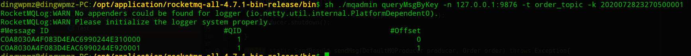
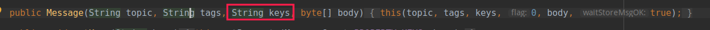
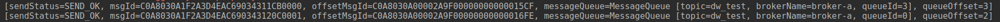

- 01 搭建学习环境准备篇.md.html
- 02 RocketMQ 核心概念扫盲篇.md.html
- 03 消息发送 API 详解与版本变迁说明.md.html
- 04 结合实际应用场景谈消息发送.md.html
- 05 消息发送核心参数与工作原理详解.md.html
- 06 消息发送常见错误与解决方案.md.html
- 07 事务消息使用及方案选型思考.md.html
- 08 消息消费 API 与版本变迁说明.md.html
- 09 DefaultMQPushConsumer 核心参数与工作原理.md.html
- 10 DefaultMQPushConsumer 使用示例与注意事项.md.html
- 11 DefaultLitePullConsumer 核心参数与实战.md.html
- 12 结合实际场景再聊 DefaultLitePullConsumer 的使用.md.html
- 13 结合实际场景顺序消费、消息过滤实战.md.html
- 14 消息消费积压问题排查实战.md.html
- 15 RocketMQ 常用命令实战.md.html
- 16 RocketMQ 集群性能摸高.md.html
- 17 RocketMQ 集群性能调优.md.html
- 18 RocketMQ 集群平滑运维.md.html
- 19 RocketMQ 集群监控（一）.md.html
- 20 RocketMQ 集群监控（二）.md.html
- 21 RocketMQ 集群告警.md.html
- 22 RocketMQ 集群踩坑记.md.html
- 23 消息轨迹、ACL 与多副本搭建.md.html
- 24 RocketMQ-Console 常用页面指标获取逻辑.md.html
- 25 RocketMQ Nameserver 背后的设计理念.md.html
- 26 Java 并发编程实战.md.html
- 27 从 RocketMQ 学基于文件的编程模式（一）.md.html
- 28 从 RocketMQ 学基于文件的编程模式（二）.md.html
- 29 从 RocketMQ 学 Netty 网络编程技巧.md.html
- 30 RocketMQ 学习方法之我见.md.html
- 捐赠
04 结合实际应用场景谈消息发送
本篇将开始结合各种使用场景，运用合适的 API 解决具体的实际问题。
消息发送方式
RocketMQ 支持同步、异步、Oneway 三种发送方式。
- 同步：客户端发起一次消息发送后会同步等待服务器的响应结果。
- 异步：客户端发起一下消息发起请求后不等待服务器响应结果而是立即返回，这样不会阻塞客户端子线程，当客户端收到服务端（Broker）的响应结果后会自动调用回调函数。
- Oneway：客户端发起消息发送请求后并不会等待服务器的响应结果，也不会调用回调函数，即不关心消息的最终发送结果。
下面首先用 Demo 演示一下异步消息发送模式。
public static void main(String[] args) throws Exception{
DefaultMQProducer producer = new DefaultMQProducer("testProducerGroup");
producer.setNamesrvAddr("192.168.3.10:9876");
try {
producer.start();
//发送单条消息
Message msg = new Message("TOPIC_TEST", "hello rocketmq".getBytes());
producer.send(msg, new SendCallback() {
// 消息发送成功回调函数
public void onSuccess(SendResult sendResult) {
System.out.printf("%s%n", sendResult);
}
// 消息发送失败回调函数
public void onException(Throwable e) {
e.printStackTrace();
// 消息发送失败，可以在这里做补偿，例如将消息存储到数据库，定时重试。
}
});
} catch (Throwable e) {
e.printStackTrace();
//消息发送失败，可以在这里做补偿，例如将消息存储到数据库，定时重试。
}
Thread.sleep(3000);
// 使用完毕后，关闭消息发送者
// 基于 Spring Boot 的应用，在消息发送的时候并不会调用 shutdown 方法，而是等到 spring 容器停止
producer.shutdown();
}
Oneway 方式通常用于发送一些不太重要的消息，例如操作日志，偶然出现消息丢失对业务无影响。那实际生产中，同步发送与异步发送该如何选择呢？
在回答如何选择同步发送还是异步发送时，首先简单介绍一下异步发送的实现原理：
- 每一个消息发送者实例（DefaultMQProducer）内部会创建一个异步消息发送线程池，默认线程数量为 CPU 核数，线程池内部持有一个有界队列，默认长度为 5W，并且会控制异步调用的最大并发度，默认为 65536，其可以通过参数 clientAsyncSemaphoreValue 来配置。
- 客户端使线程池将消息发送到服务端，服务端处理完成后，返回结构并根据是否发生异常调用 SendCallback 回调函数。
笔者的实践建议如下：
MQ 与应用服务器都在一个内部网络中，网络通信的流量通常可以忽略，而且 MQ 的设计目的是低延迟、高并发，故通常没有必要使用异步发送，通常都是为了提高 RocketMQ Broker 端相关的参数，特别是刷盘策略和复制策略。如果在一个场景中，一个数据库操作事务中需要发送多条消息，这个时候使用异步发送也会带来一定性能提升。
如果使用异步发送，编程模型上会稍显复杂，其补偿机制、容错机制将会变的较为复杂。
正如上述示例中阐述的那样，补偿代码应该在两个地方调用：
producer#send方法时需要捕捉异常，常见的异常信息：MQClientException("executor rejected ", e)。- 在 SendCallback 的 onException 中进行补偿，常见异常有调用超时、RemotingTooMuchRequestException。
队列选择机制
试想这样一个场景：订单系统可以允许用户更新订单的信息，并且订单有其流转的生命周期，例如待付款、已支付、卖家已发货、买家已收货等等。目前的系统架构设计如下图所示：

一个订单会对应多条消息（例如创建、订单修改、订单状态变更）如果不加以干预的话，同一个订单编号的消息会存入到 order_topic 的多个队列中，从 RocketMQ 队列负载机制来看，不同的队列会被不同的消费者消费，但这个业务有其特殊性，order-service-app 在消费消息时，是希望按照订单的变化顺序进行处理的，那我们该如何处理呢？
从前面的文章中我们得知，RocketMQ 支持队列级别的顺序消费，故我们只需要在消息发送的时候如果将同一个订单号的不同的消息发送到同一个队列，这样在消费的时候，我们就能按照顺序进行处理。
故 RocketMQ 为了解决这个问题，在消息发送时提供了自定义的队列负载机制，消息发送的默认队列负载机制为轮询，那如何进行队列选择呢？RocketMQ 提供了如下 API：

使用示例如下：
public static void main(String[] args) throws Exception {
DefaultMQProducer producer = new DefaultMQProducer("dw_test_producer_group");
producer.setNamesrvAddr("127.0.0.1:9876");
producer.start();
// 订单实体
Order order = new Order();
order.setId(1001L);
order.setOrderNo("2020072823270500001");
order.setBuyerId(1L);
order.setSellerId(1L);
order.setTotalPrice(10000L);
order.setStatus(0);
System.out.printf("%s%n", sendMsg(producer, order));
//订单状态发生变更
order.setStatus(1);
//重新发生消息
System.out.printf("%s%n", sendMsg(producer, order));
producer.shutdown();
}
public static SendResult sendMsg(DefaultMQProducer producer, Order order) throws
Exception{
//这里为了方便查找消息，在构建消息的时候，使用订单编号为 key，这样可以通过订单编号查询消息。
Message msg = new Message("order_topic", null, order.getOrderNo(),
JSON.toJSONString(order).getBytes());
return producer.send(msg, new MessageQueueSelector() {
@Override
public MessageQueue select(List<MessageQueue> mqs, Message msg, Object arg)
{
//根据订单编号的 hashcode 进行队列选择
if(mqs == null || mqs.isEmpty()) {
return null;
}
int index = Math.abs(arg.hashCode()) % mqs.size();
return mqs.get(index < 0 ? 0 : index );
}
}, order.getOrderNo());
}
运行上述代码后，可以通过 queryMsgByKey 命令根据设置的 Key 查询消息，其结果如下图所示：

从这里可以看出，两条消息都写入在队列 1 中。关于队列的顺序消费，将在消息消费部分进行详细介绍，本篇只关注消息的发送。
温馨提示：消息发送时如果使用了 MessageQueueSelector，那消息发送的重试机制将失效，即 RocketMQ 客户端并不会重试，消息发送的高可用需要由业务方来保证，典型的就是消息发送失败后存在数据库中，然后定时调度，最终将消息发送到 MQ。
RocketMQ Key 的使用场景
RocketMQ 相对于 Kafka 有一个非常吸引人的功能，特别是业务相关的场景，RocketMQ 提供了丰富的消息查询机制，例如使用消息偏移量、消息全局唯一 msgId、消息 Key。
RocketMQ 在消息发送的时候，可以为一条消息设置索引建，例如上面示例中使用订单编号作为消息的 Key，这样我们可以通过该索引 Key 进行查询消息。
如果需要为消息指定 Key，只需要在构建 Message 的时候传入 Key 参数即可，例如下面的 API：

如果要为消息指定多个 Key，用空格分开即可，示例代码如下：
public static void main(String[] args) throws Exception {
DefaultMQProducer producer = new DefaultMQProducer("dw_test_producer_group");
producer.setNamesrvAddr("127.0.0.1:9876");
producer.start();
// 订单实体
Order order = new Order();
order.setId(1001L);
order.setOrderNo("2020072823270500002");
order.setBuyerId(1L);
order.setSellerId(2L);
order.setTotalPrice(10000L);
order.setStatus(0);
Message msg = new Message("dw_test", null, "2020072823270500002 ODS0002",
JSON.toJSONString(order).getBytes());
System.out.printf("%s%n", producer.send(msg));
producer.shutdown();
}
除了上面提到的可以通过 queryMsgByKey 进行查询后，还可以通过 RocketMQ-Console 进行消息查询，其截图如下：

RocketMQ Tag 使用场景
RocketMQ 可以为 Topic 设置 Tag（标签），这样消费端可以对 Topic 中的消息基于 Tag 进行过滤，即选择性的对 Topic 中的消息进行处理。
例如一个订单的全生命流程：创建订单、待支付、支付完成、商家审核，商家发货、买家发货，订单每一个状态的变更都会向主题 order_topic 发送消息，但不同下游系统只关注订单流中某几个阶段的消息，并不是需要处理所有消息。
例如有如下两个场景：
- 活动模块，只要用户下单并成功支付，就发放一张优惠券；
- 物流模块，只需关注订单审核通过后，就需要创建物流信息，选择供应商。
故会创建两个消费组 order_topic_activity_consumer、order_topic_logistics_consumer，但这些消费组又无需处理全部消息，这个时候 Tag 机制就派上用场了。
在消息发送时，例如创建订单时，发送的消息时，设置 Tag 为 c，而支付成功时创建的消息为 w。然后各个场景的消费者按需要订阅 Topic 时指定 Tag。示例代码如下：
public static void main(String[] args) throws Exception {
DefaultMQProducer producer = new DefaultMQProducer("dw_test_producer_group");
producer.setNamesrvAddr("127.0.0.1:9876");
producer.start();
// 订单实体
Order order = new Order();
order.setId(1001L);
order.setOrderNo("2020072823270500003");
order.setBuyerId(1L);
order.setSellerId(2L);
order.setTotalPrice(10000L);
order.setStatus(0);
Message msg = new Message("dw_test", "c", "2020072823270500003",
JSON.toJSONString(order).getBytes());
System.out.printf("%s%n", producer.send(msg));
order.setStatus(1);
msg = new Message("dw_test", "w", "2020072823270500003",
JSON.toJSONString(order).getBytes());
System.out.printf("%s%n", producer.send(msg));
producer.shutdown();
}
// 消费端示例代码
public static void main(String[] args) throws Exception{
DefaultMQPushConsumer consumer = new DefaultMQPushConsumer("order_topic_activity_consumer");
consumer.setNamesrvAddr("127.0.0.1:9876");
consumer.setConsumeFromWhere(ConsumeFromWhere.CONSUME_FROM_FIRST_OFFSET);
consumer.subscribe("dw_test", "c");
consumer.registerMessageListener(new MessageListenerConcurrently() {
public ConsumeConcurrentlyStatus consumeMessage(List<MessageExt> msgs,
ConsumeConcurrentlyContext context) {
System.out.printf("%s Receive New Messages: %s %n",
Thread.currentThread().getName(), msgs);
return ConsumeConcurrentlyStatus.CONSUME_SUCCESS;
}
});
consumer.start();
System.out.printf("Consumer Started.%n");
}
上面关于消费后面会重点介绍，这里主要的关键点就是在订阅 Topic 时不仅指定 Topic，还指定 Tag，消费端运行后，可以查看这些消息的消费情况，如下图所示：

不符合订阅的 Tag，其消费状态显示为 CONSUMED_BUT_FILTERED（消费但被过滤掉）。
RocketMQ msgId 详解
消息发送的结果如下图所示：

返回的字段包含 msgId、offsetMsgId。
msgId
该 ID 是消息发送者在消息发送时会首先在客户端生成，全局唯一，在 RocketMQ 中该 ID 还有另外的一个叫法——uniqId，无不体现其全局唯一性。其组成说明如下：
- 客户端发送 IP，支持 IPV4 和 IPV6
- 进程 PID（2 字节）
- 类加载器的 hashcode（4 字节）
- 当前系统时间戳与启动时间戳的差值（4 字节）
- 自增序列（2 字节）
offsetMsgId
消息所在 Broker 的物理偏移量，即在 commitlog 文件中的偏移量，其组成如下两部分组成：
- Broker 的 IP 与端口号
- commitlog 中的物理偏移量
温馨提示：可以根据 offsetMsgId 即可以定位到具体的消息，无需知道该消息的 Topic 等其他一切信息。
这两个消息 ID 有时候在排查问题的时候，特别是项目能提供 msgID，但是在消息集群中无法查询到时可以通过解码这消息 ID，从而得知消息发送者的 IP 或消息存储 Broker 的 IP。
其中 msgId 可以通过 MessageClientIDSetter 的 getIPStrFromID 方法获取 IP，而 OffsetMsgId 可以通过 MessageDecoder 的 decodeMessageId 方法解码。
小结
本篇主要阐述 3 种消息发送的利弊、消息队列自定义负载机制、Key、Tag 的使用场景，并给出具体的场景、方案以及示例程序。
© 2019 - 2023 Liangliang Lee. Powered by gin and hexo-theme-book.